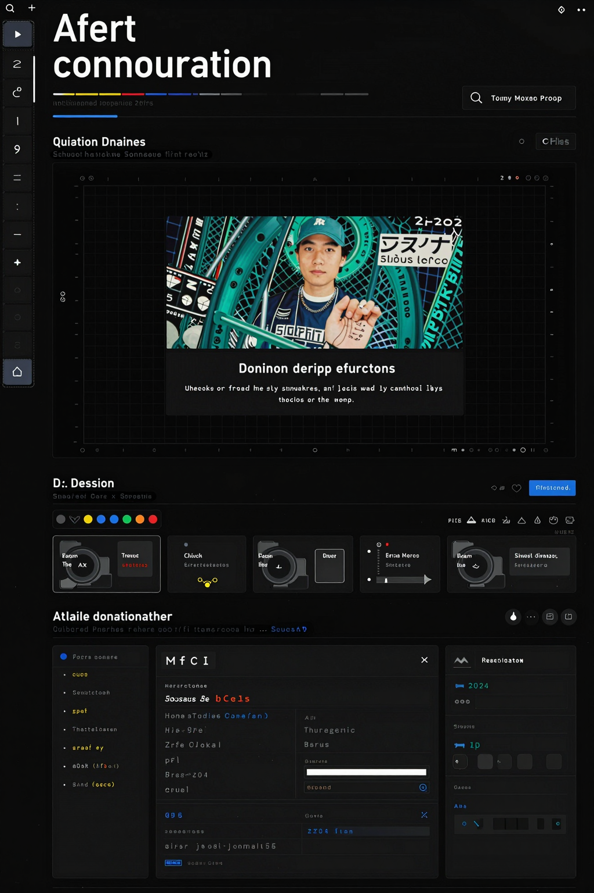
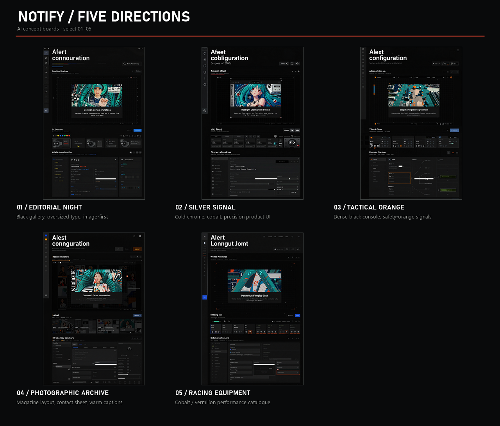
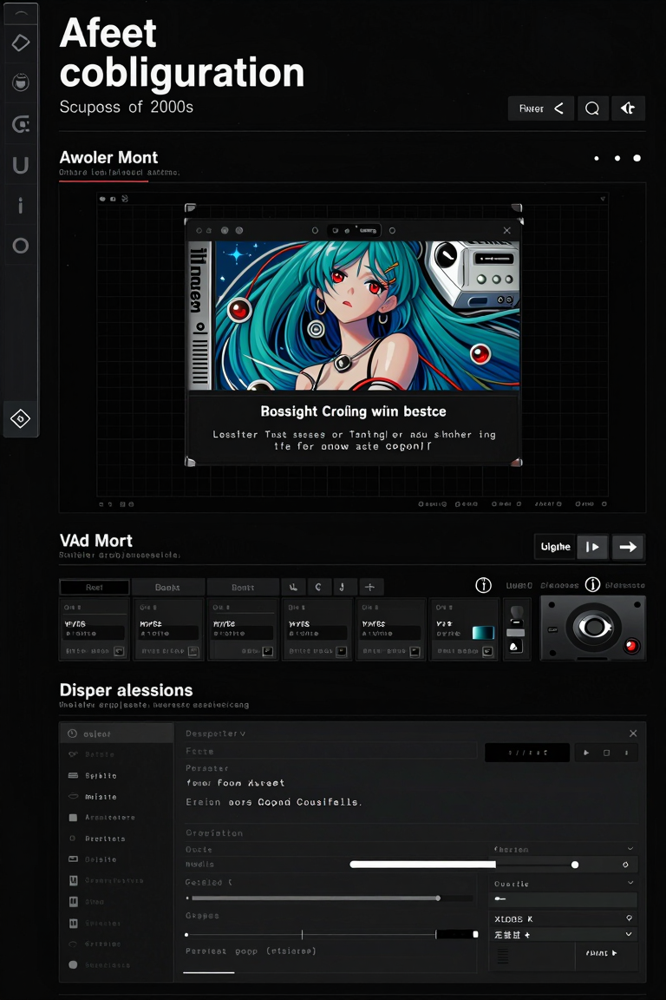
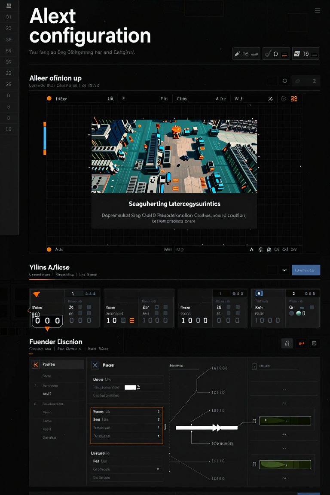
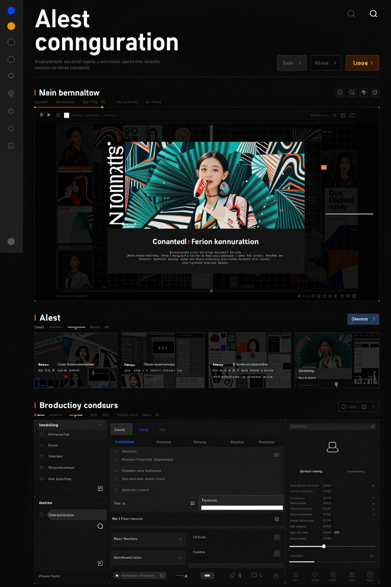
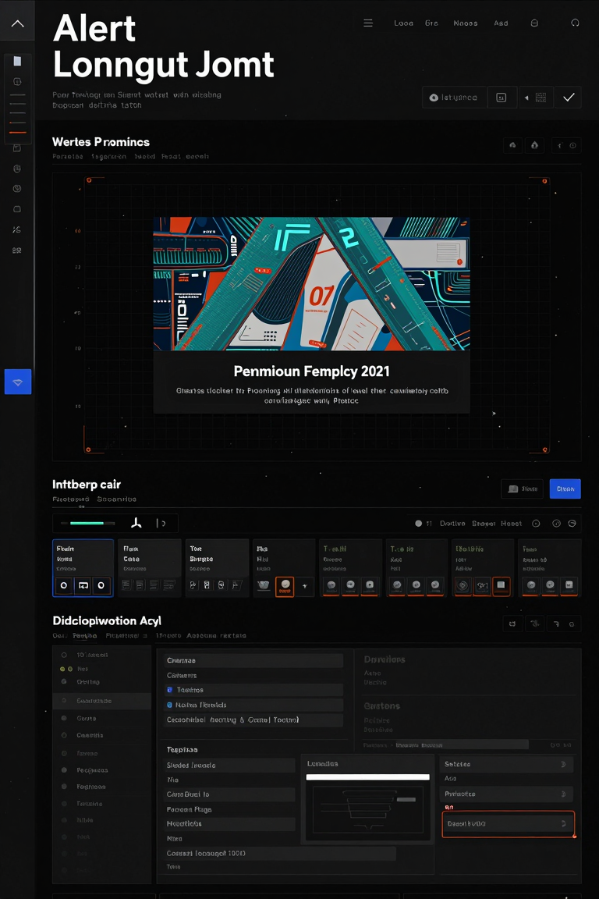

01EDITORIAL NIGHT
Black gallery
Image-first editorial layout, oversized type, restrained silver and vermilion.
ComfyUI art-direction boards · select 01–05 · generated text and imagery are illustrative and will be rebuilt with real UI copy.


Image-first editorial layout, oversized type, restrained silver and vermilion.

Compact instrument layout, large preview, technical panels, cobalt action accents.

Dense black interface, safety-orange signals, data-heavy control-room composition.

Full-bleed photography, contact-sheet cues, editorial captions and spec panels.

Bold racing graphics, cobalt and vermilion identity, equipment-style cue tags.